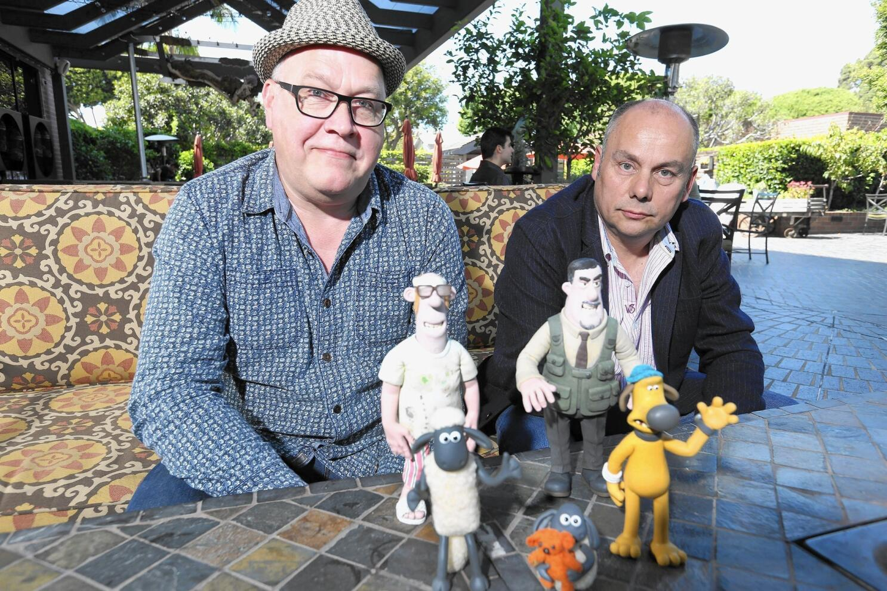

Welcome
Shaun the Sheep
Shaun the Sheep is a British stop-motion animated television series created by Aardman Animations.
Shaun the Sheep is a British stop-motion animated television series created by Aardman Animations.
Shaun the Sheep, a British stop-motion animated television series created by Aardman Animations, follows the adventures of Shaun, a clever and resourceful sheep who leads his flock into all sorts of mischief and adventures on Mossy Bottom Farm. The show is known for its humor, charming animation style, and lack of spoken dialogue, making it universally accessible. Shaun and his companions exhibit human-like qualities and engage in various humorous adventures. Shaun, the main character, is a clever and resourceful sheep who leads his flock into all sorts of mischief and adventures on Mossy Bottom Farm. The show is known for its humor, charming animation style, and lack of spoken dialogue, making it universally accessible. The series features Shaun, an intelligent and resourceful sheep who leads a flock on a farm. Despite their lack of dialogue, Shaun and his companions exhibit human-like qualities and engage in various humorous adventures.
